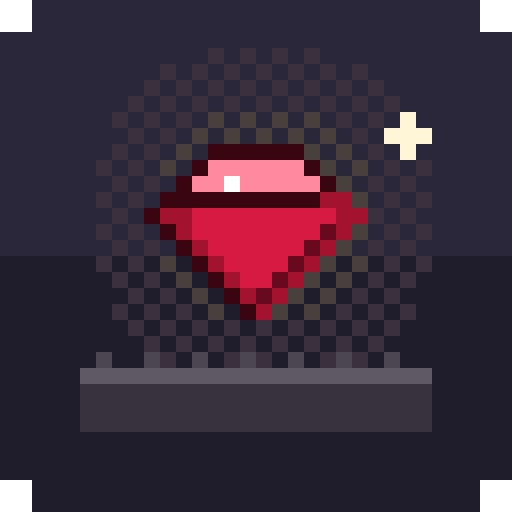
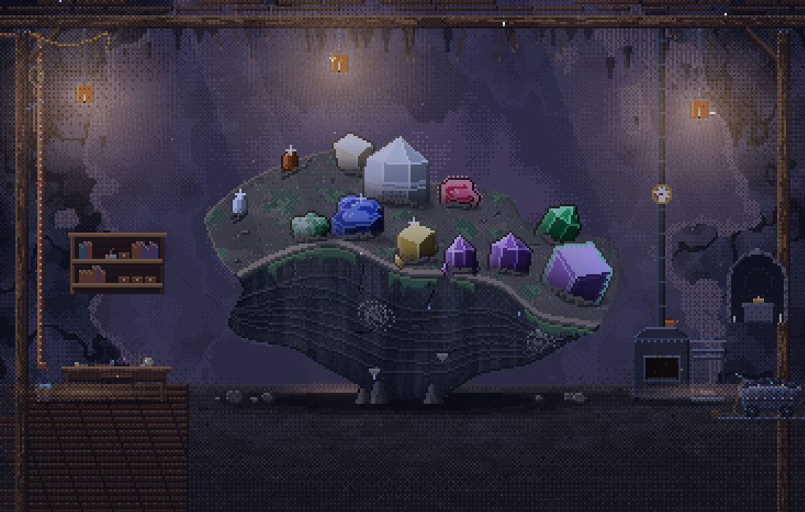
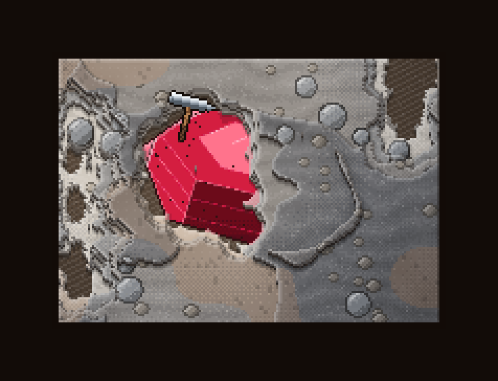
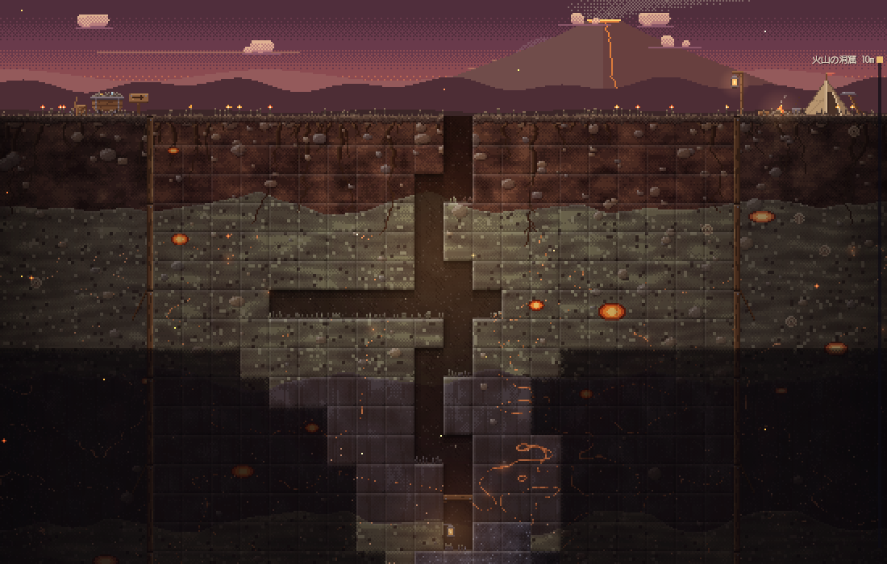
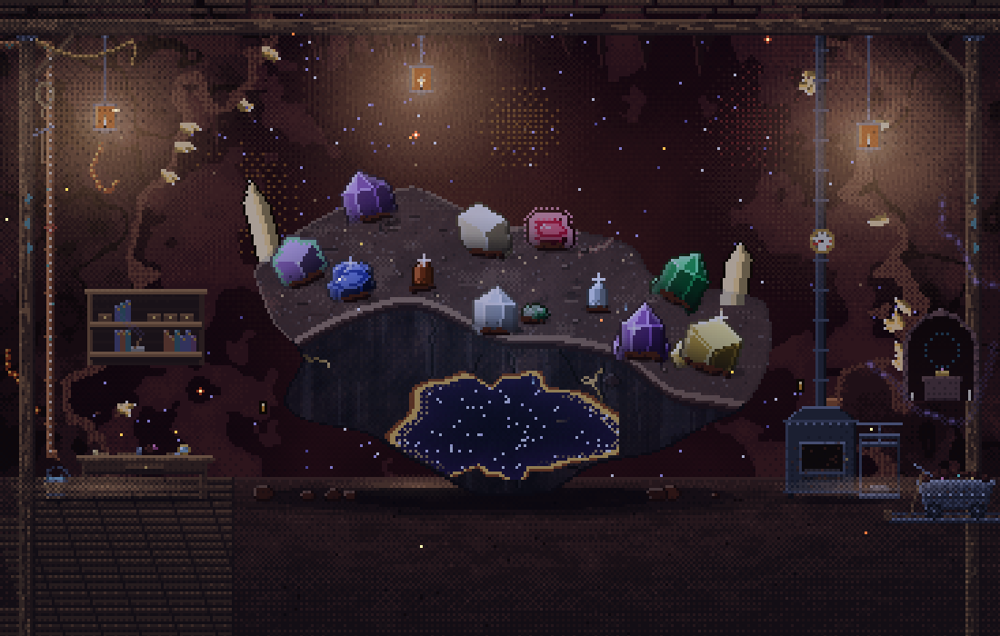

壁で宝石を育てて、なぞって収穫する。ときどき掘る。

工房の真ん中に浮かぶ岩に、勝手に結晶が生えてきます。指（マウス）でなぞれば収穫。岩の種類や温度、湿り気、置いた設備で生えるものが変わるので、図鑑の「？」を埋めていくのが基本の遊びです。

初めて見つけた石は、正体の分からない原石で届きます。ハンマーとブラシで周りの岩を落としていくと、だんだん中身が見えてくる。割りすぎると欠けるので、そこは慎重に。

少し潜ると発掘場に行けるようになります。地層を掘って、壁では育たない石や化石まじりの塊を探しに。

深く潜るほど景色も石も変わっていきます。放っておいても育つので、作業の横で小さな窓にして置いておくのもおすすめ。
GemHollow-Setup-○○.exe をダウンロードします。インストールしたくない人は「インストール不要版」をどうぞ。ダウンロードしたファイルをダブルクリックするだけで起動します。
まだ開発中のバージョンです。バランスが変だったり、止まったりすることがあるかもしれません。気づいたことがあれば教えてもらえるとうれしいです。